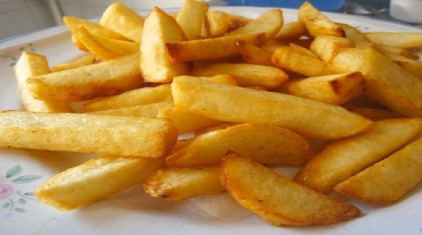

Aixo es un paragraf
Aixo es un altre paragraf
Aquest es un paragraf per defecte
Això es un paragraf subratllat
Aquest es un altre paragraf en negreta
Texto 1
Texto 2
Texto 3
Això es una capçalera h1
Això és un paragraf
Això es una capçalera h2
Això és un paragraf
Capçalera h1
Capçalera h2
Capçalera h3
Capçalera h4
Capçalera h5
Capçalera h6

Lista desordenada de colores
- Rojo
- Amarillo
- Verde
- Blanco
- Naranja
Llista ordenada d'unitats formatives M8:
- UF1:Ofimatica i eines web
- UF5:Html i CSS
- UF2:Gestors de continguts
- UF3:Portals Web d'aprenentatge
- UF4:Gestors d'arcxiu web
Patatas fritas
Receta de patatas fritas caseras

Ingredientes
- 3 o 4 patatas
- 4 dientes de ajo
- Aceite de oliva
- Sal
Elaboración (Pasos)
- Calentar aceite en una sartén
- Añadir las patatas cortadas, la sal y los ajos
- Freír al gusto
- Servir en plato
Dadades:
NOm Alumne
CiutatAlumne
(Provincia)
Numeros
3 1 2 4 1 6 8